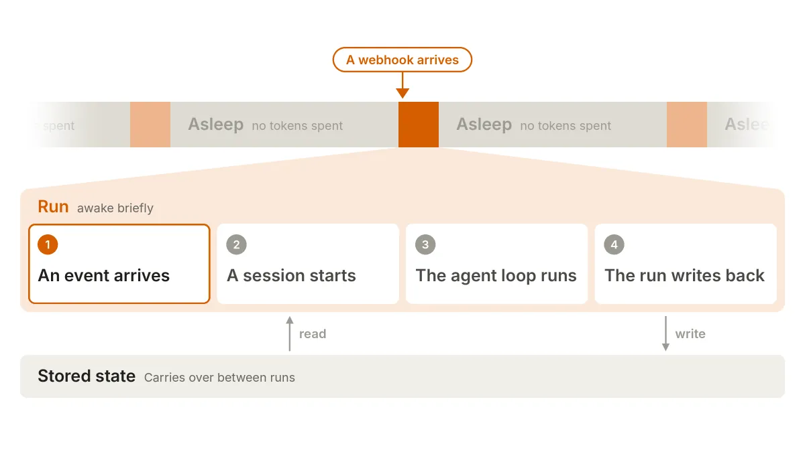
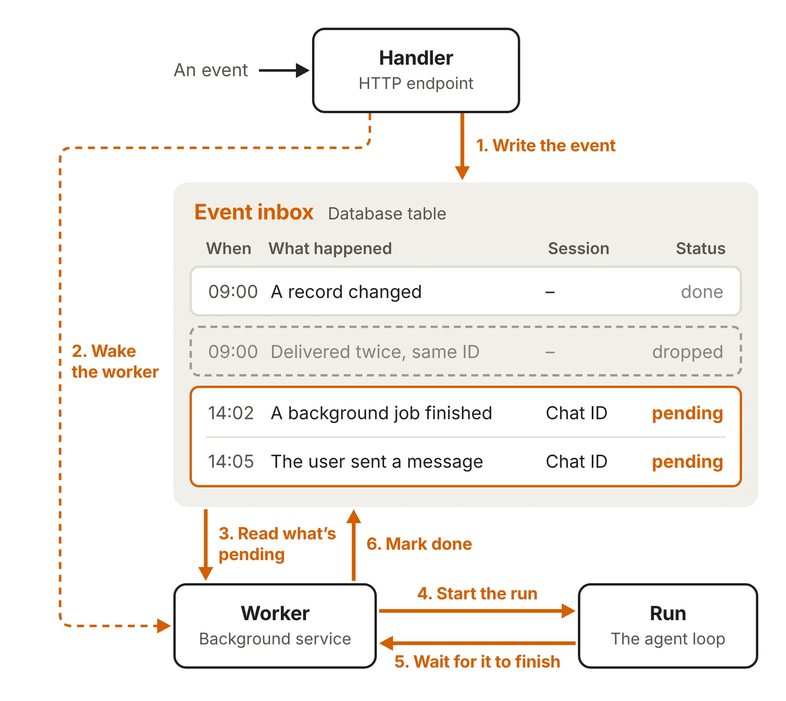
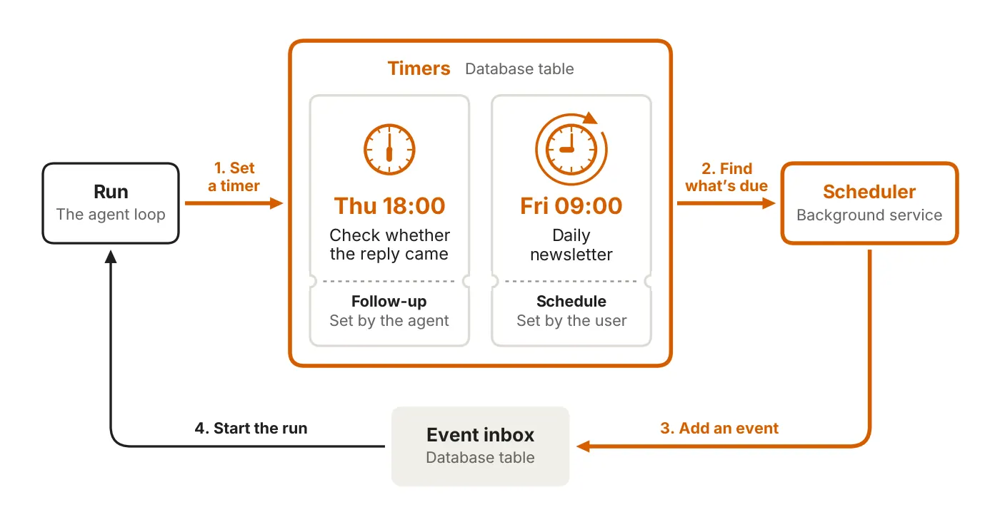
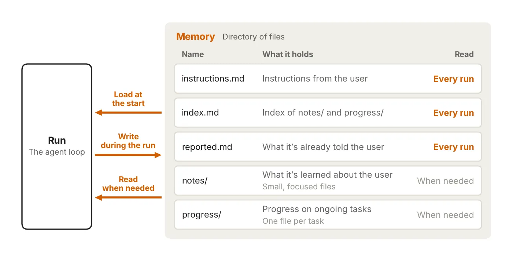
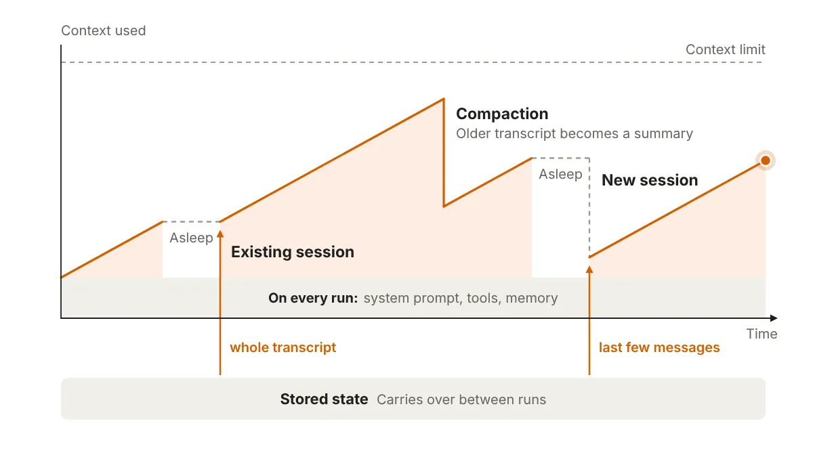
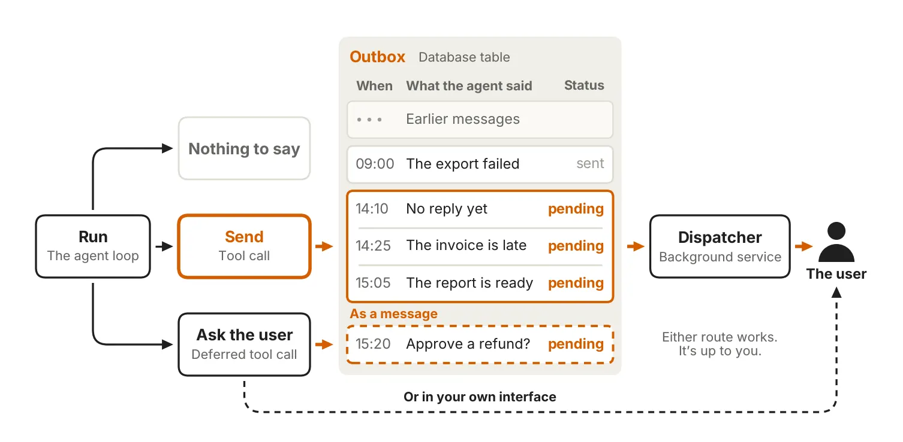
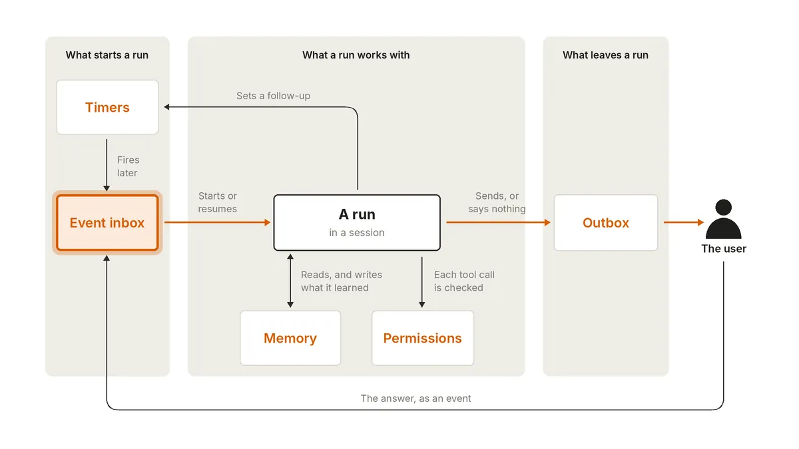

Anthropic · Claude 官方博客 · 2026-11-13
Building always-on agents构建常驻智能体：五个原语，让智能体自己醒来
60 秒速览：这篇文章在说什么
译者所加，不是原文的一部分 —— 读完这 6 条，再看原文会快很多。
- 一句话结论：常驻智能体不是一个更聪明的循环，而是五件基础设施围着同一个循环转。
- 常驻的真相：它大部分时间在睡，被事件叫醒，干活，把发生了什么写回状态，然后再睡。
- 五个原语：事件收件箱（谁叫醒它）、定时器（未来的事件）、记忆（跨运行带什么）、权限（无人时能做什么）、发件箱（话怎么送到）。
- 关键闭环：用户的回答本身也是一个事件，从收件箱回来；defer 让「问人」不再卡住当前这次运行。
- 代价与边界：收件箱要能对事件去重、让工作进程崩溃后重试，权限要逐次审查工具调用；压缩与重开会话都会丢细节，重要状态要写进记忆。
- 读法建议：先读第 3 节的收件箱与发件箱——收件箱支持事件重试，需要控制消息节奏或支持错误恢复时可引入发件箱；再回头看记忆与权限的取舍。
直接触发时的潜在问题
- 每个事件源直接调用智能体，没有统一入口
- 两个事件同时到达，可能启动互相竞争的运行
- 进程崩溃，事件可能整个丢掉
- 上下文越滚越长，压缩或重开会话都会丢细节
- 消息直接发出，发送节奏与失败恢复都难控制
本文建议：五个原语围着一个循环
- 事件先进收件箱，同一时刻只有一个活跃工作进程
- 定时器保存未来触发记录，调度器在到期时向收件箱投递事件
- 记忆按读取频率分层：每次读 / 按需读
- 权限逐次判断：自行执行、阻止、或等用户批准
- 需要控制节奏或错误恢复时，再加正式发件箱
左右两栏是译者按正文归纳，不是原文。
速览与对比卡是译者按正文压缩的，不是原文；正文里带虚线下划线的词可以悬停看术语卡，上标数字是译者注。原文 2026-11-13 发布于 Anthropic 的 Claude 博客，作者 William Hu。
Over the past few months, we’ve seen a resurgence of always-on agents.
过去几个月，我们看到常驻智能体再度兴起。
Always-on agents are stateful and proactive, meaning they manage context across sessions and take actions without direct supervision. Underneath, they run on the same core loop as other agents. The difference is the surrounding architecture, which is built from primitives that control when the agents wake up, what carries over between runs, and how their work reaches the user.
常驻智能体是有状态的，并且会主动行动，也就是说，它们能够跨会话管理上下文，并在没有直接监督的情况下采取行动。在底层，它们与其他智能体一样，运行着相同的核心循环。区别在于外围架构：它由一组原语构成，这些原语控制智能体何时唤醒、哪些信息会在各次运行之间保留，以及工作成果如何送达用户。
The resurgence is largely due to recent model advancements, which have made always-on agents more practical to run. First, the latest models have better judgment: they’re more reliable at understanding user intent and knowing when to check in. Second, intelligence is becoming cheaper, with long-horizon tasks benefiting the most. For example, on one long-horizon coding benchmark, Opus 5.5 cost 78% less per solved task than Opus 5, compared with 40% less on typical workloads.
这股复兴浪潮主要得益于近期模型的进步，这些进步让运行常驻智能体变得更加切实可行。首先，最新模型的判断力更强：它们能更可靠地理解用户意图，并判断何时需要向用户确认或汇报。其次，智能的成本正在降低，耗时较长的任务受益最大。例如，在一项长时程编程基准测试中，Opus 5.5 每解决一项任务的成本比 Opus 5 低 78%，而在典型工作负载中，成本降幅为 40%。
Customers have started to ask us how to integrate this type of experience into their own products. Some companies want to make their existing agents more proactive, while others are looking to build them from the ground up.
客户已经开始询问我们，如何将这类体验融入他们自己的产品。一些公司希望让现有智能体更主动，另一些则希望从零开始构建。
This post breaks down the primitives behind always-on agents and walks through how they fit together.
本文将拆解常驻智能体背后的原语，并逐步介绍它们如何协同工作。
The cycle behind the always-on agent常驻智能体的循环
一次运行 = 事件到达 → 会话开始 → 循环干活 → 写回状态，然后回到睡眠。图 1 把这条时间轴画了出来。
An always-on agent is not actually “always on.” This is just a description of the user experience.
常驻智能体实际上并非“一直在线”。这只是对用户体验的描述。
In reality, the agent spends most of its time asleep, waking up periodically to do work. Each stretch of work is called a run: the agent receives an event, completes its task, and then saves information about what happened. A run works inside a session, which is the transcript of messages and tool calls. Once the run is finished, the agent goes back to sleep, and the cycle repeats indefinitely.
实际上，智能体大部分时间都处于休眠状态，间歇醒来执行工作。每一段工作过程称为一次运行：智能体接收一个事件，完成任务，然后保存有关所发生情况的信息。运行在会话中进行，会话是消息和工具调用的记录。运行结束后，智能体会重新进入休眠状态，如此循环往复，不断重复。

一次运行的四步，和它周围漫长的休眠 时间轴上大部分是「Asleep，不消耗 token」；事件到达时短暂醒来，走完四步：事件到达 → 会话开始 → 智能体循环运行 → 写回状态。
原文图注：Animated diagram of an always-on agent’s timeline: long stretches asleep with no tokens spent, broken by brief runs. Each run has four steps: an event arrives, a session starts, the agent loop runs, and the run writes back to stored state that carries over between runs.
▶ 视频按需加载（0.2 MB，浏览器 Range 请求，点击后才下载）。
这张图怎么看（3 条）
- 先看灰色长条：Asleep 段才是常驻智能体的大部分时间
- 橙色「A webhook arrives」把时间轴切成睡眠与运行两段
- 下方 Run 卡片里编号 1–4 是四步；注意 2 的 read 与 4 的 write 都指向 Stored state
一句话：常驻不是一直算，而是被事件切成一短短的运行。
The core primitives五个核心原语
五个原语逐个拆：收件箱负责排队与去重，定时器负责「未来的事件」，记忆负责跨运行携带信息，权限负责无人时的边界，发件箱负责送达。
The surrounding architecture of an always-on agent has five core primitives: an event inbox, timers, memory, permissions, and an outbox. Let’s take a look at each.
常驻智能体的外围架构包含五个核心原语：事件收件箱、定时器、记忆、权限和发件箱。下面逐一介绍。
Event inbox事件收件箱
Most AI agents only run when the user sends a message. In contrast, always-on agents can be triggered by many types of events, including webhooks, scheduled tasks, and background jobs.
大多数 AI 智能体只有在用户发送消息时才会运行。相比之下，常驻智能体可以由多种类型的事件触发，包括 webhook、计划任务和后台作业。
One tempting approach is to have each event source call the agent directly, but that has a few failure modes. For example, two events arriving at the same time can start competing runs, and a crash can lose an event entirely.
一种很容易想到的做法是让每个事件源直接调用智能体，但这种做法存在几种故障情形。例如，两个同时到达的事件可能会启动相互竞争的运行，而一次崩溃就可能导致某个事件彻底丢失。
This is where the event inbox comes in. Instead of calling the agent, every source sends an event to an inbox, where a worker picks it up.
这时，事件收件箱就派上用场了。各个事件源将事件发送到收件箱，由工作进程从中取出事件，而不是直接调用智能体。
The simplest version has three components:
最简单的版本包含三个组件：
- A durable list of events, usually a database table;
- A handler, usually an HTTP endpoint, that writes events to the list; and
- A worker, usually a background service, that reads from the list.
- 一个持久化的事件列表，通常是一张数据库表；
- 一个将事件写入列表的处理器，通常是一个 HTTP 端点；以及
- 一个从列表中读取事件的工作进程，通常是一个后台服务。
The inbox should track the status of each event, and events can be deduplicated based on unique identifiers from the source. A relational database works well for the inbox, with every event appended as a new row. We recommend starting with one inbox per user, but you can split this further if you need more parallelism.
收件箱应跟踪每个事件的状态，还可以根据事件源提供的唯一标识符对事件进行去重。关系型数据库很适合用作收件箱，每个事件都作为新的一行追加进去。我们建议一开始为每个用户设置一个收件箱，但如果需要更高的并行度，也可以进一步细分。

事件收件箱：先登记，再干活 Handler 把事件写进数据库表；Worker 读 pending、启动 Run、等它结束再标 done；重复事件按 ID 丢弃。
原文图注：Diagram of the event inbox. A handler (an HTTP endpoint) writes each event to the inbox, a database table that tracks status and drops duplicates, and wakes the worker. The worker reads what’s pending, starts the run, waits for it to finish, and marks the events done.
这张图怎么看（3 条）
- 沿橙色编号 1→6 读：写事件、叫醒 worker、读 pending、启动 run、等结束、标 done
- 表里两行 pending 的 Session 列都是 Chat ID：同一个会话可以排队多个事件
- 虚线那行「Delivered twice, same ID」被标成 dropped，是去重的证据
一句话：收件箱把「谁叫醒智能体」变成可去重、可重试的记录。
When a new event comes in, the handler writes the event to the inbox and wakes the worker. The worker reads whatever is pending and starts a run. Events that continue earlier work, such as a reply from the user, resume an existing session, while everything else starts a new session.
新事件到达时，处理器会将事件写入收件箱，并唤醒工作进程。工作进程会读取所有待处理的事件，并启动一次运行。延续先前工作的事件（例如用户的回复）会恢复已有会话，而其他所有事件都会开启新会话。
From there, the worker passes the events to the agent loop, waits for the run to finish, and marks the corresponding events as done. The implementation details can get tricky, so here are a few best practices:
随后，工作进程会将这些事件传给智能体循环，等待运行结束，再将相应事件标记为已完成。实现细节可能比较棘手，因此这里给出一些最佳实践：
- The handler should acknowledge events quickly. Some sources, such as webhook providers, treat slow responses as failures. The handler can still run lightweight checks, but any deeper verification, such as checking for prompt injection, should be done during the run.
- The inbox should be the source of truth. When the worker is woken up, it should pull the latest events from the inbox first. That way, if the worker dies mid-run, a new one can pick up the same event and retry.
- An inbox should only have one active worker at a time. This prevents two runs from duplicating work or overwriting each other. When a new event shows up mid-run, you can either push it to the next run, fold it into the current run, or interrupt and restart.
- The worker should batch pending events together. For example, if the user sends several messages in a row, the worker can merge them into a single run, so the agent only needs to reply once.
- 处理器应迅速确认收到事件。某些事件来源（例如 webhook 提供方）会将响应缓慢视为失败。处理器仍然可以执行轻量检查，但任何更深入的验证（例如检查提示词注入）都应在运行期间进行。
- 收件箱应作为事实依据。工作进程被唤醒时，应先从收件箱拉取最新事件。这样，即使工作进程在运行途中崩溃，新的工作进程也能接手同一个事件并重试。
- 一个收件箱在同一时间只能有一个活跃的工作进程。这可以防止两次运行重复执行工作或相互覆盖结果。如果新事件在运行途中出现，可以将其留到下一次运行处理，纳入当前运行，或中断运行并重新启动。
- 工作进程应将待处理事件合并成批处理。例如，如果用户连续发送多条消息，工作进程可以将这些消息合并到一次运行中，这样智能体只需回复一次。
Timers定时器
Together with the event inbox, timers let always-on agents be proactive. Timers generally fall into one of two categories: follow-ups or schedules. A follow-up is a deadline that the agent sets for itself, such as checking in on a reply. A schedule, on the other hand, is a recurring task that happens on a known cadence, such as a daily newsletter.
定时器与事件收件箱配合，让常驻智能体能够主动采取行动。定时器通常分为两类：后续跟进和定期任务。后续跟进是智能体为自己设定的一个截止时间，例如到时查看是否收到回复。而定期任务则是按已知周期重复执行的任务，例如每日简报。
Timers live in their own durable store, usually another database table, separate from the inbox. The inbox should only hold events that are ready to be worked on. A follow-up and a schedule can share a similar schema, but a schedule needs to track its recurrence as well.
定时器保存在独立于收件箱的持久化存储中，通常是另一张数据库表。收件箱应只存放已准备好处理的事件。后续跟进和定期任务可以采用类似的数据结构，但定期任务还需要记录其重复执行规则。

定时器：两种到点叫醒 Run 往表里写一条定时器（智能体设的跟进 / 用户设的日程）；Scheduler 找到到点的记录，往事件收件箱加一个事件，从而启动下一次运行。
原文图注：Diagram of timers. A run sets a timer in a database table, either a follow-up set by the agent or a schedule set by the user. A scheduler finds what’s due and adds an event to the event inbox, which starts the next run.
这张图怎么看（3 条）
- 左卡 Thu 18:00 Follow-up，Set by the agent；右卡 Fri 09:00 Daily newsletter，Set by the user
- 沿 1→4 看闭环：设 timer → scheduler 找到期 → 加事件 → 启动 run
- 定时器只保存「未来触发」的记录；真正往收件箱投事件的是调度器 Scheduler
一句话：定时器是「未来的一个事件」，不是「一个后台任务」。
A timer doesn’t initiate a run on its own. Instead, a scheduler, usually a background service, polls the store at a fixed interval and fires anything that’s due. On each pass, the scheduler:
定时器本身不会启动一次运行。相反，调度器（通常是一个后台服务）会按固定间隔轮询存储，并触发所有已到期的定时器。每轮轮询中，调度器会：
- Scans the store and finds timers that are due.
- Updates each timer based on its category. A follow-up should be marked as done. A schedule should get its due time updated to the next occurrence.
- Adds an event to the inbox and wakes the worker.
- 调度器扫描存储，找出已到期的定时器。
- 然后按类别更新每个定时器。跟进任务应标记为已完成。定期计划应把到期时间更新为下一次触发。
- 最后向收件箱添加一个事件，并唤醒工作进程。
For the scheduler, you can either build your own service or use a durable execution engine.
对于调度器，你可以自行构建服务，也可以使用持久执行引擎。
Memory记忆
Always-on agents work across many disjointed runs and rely on memory to maintain continuity.
常驻智能体会经历多次彼此独立的运行，并依靠记忆来保持连续性。
Similar to the event inbox and timers, memory should have its own store. In our products, such as Claude Code’s auto memory and the Messages API’s memory tool, this is implemented as a directory of files. For an always-on agent, the directories should map to durable storage, usually a database or an object store. This way memories outlive the worker.
As a rule of thumb, memory should only hold what the agent can’t look up again. If something already lives in another system, such as an issue tracker, you should save a pointer instead. Here is a breakdown of the types of memory an always-on agent should store:
一条经验法则是，记忆只应保存智能体无法再次查到的信息。如果某项信息已经存在于另一个系统中，例如问题跟踪系统，就应保存指向它的引用。以下是常驻智能体应存储的记忆类型：
- User instructions: Any instructions from the user about agent behavior should be saved in their own file and loaded at the start of every run. The user won’t always be around to steer the agent, so the instructions have to carry over between runs.
- User notes: The agent should save what it’s learned about the user, such as their role, their preferences, or any corrections they’ve given. You can start with one file and move to several small files as the notes grow. In the latter case, only an index is loaded at the start of each run, but the agent can pull the individual files into context when it needs more details.
- Past messages: The agent should keep track of what it’s already told the user so nothing is repeated. It can either store this in a separate file that’s loaded at the start of each run, or have the worker load the agent’s last few messages with the user.
- Task progress: For each ongoing task, the agent should keep a progress file that covers what’s been done and what’s left. Any new run can then read that file and pick up where the previous run left off. Similar to user notes, only an index is loaded at the start of each run, but the agent can pull the individual files into context when it needs more details.
- 用户指令：用户对智能体行为提出的任何指令，都应保存在单独的文件中，并在每次运行开始时加载。用户不会一直在旁引导智能体，因此这些指令必须在不同运行之间保留下来。
- 用户笔记：智能体应保存它了解到的用户信息，例如用户的角色、偏好或提出过的纠正意见。你可以从一个文件开始，随着笔记增多，再改用多个小文件。在后一种情况下，每次运行开始时只加载索引，但当智能体需要更多细节时，可以将各个文件载入上下文。
- 历史消息：智能体应记录已经对用户说过的内容，以免重复。它可以将这些内容存储在一个单独的文件中，在每次运行开始时加载；也可以让工作进程加载智能体与用户交流时最近的几条消息。
- 任务进度：对于每个进行中的任务，智能体都应维护一个进度文件，记录已完成的工作和尚待完成的工作。这样，任何一次新的运行都可以读取该文件，接着上一次运行的进度继续。与用户笔记类似，每次运行开始时只加载索引，但当智能体需要更多细节时，可以将各个文件载入上下文。
The diagram below shows one example setup.
下图展示了一种配置示例。

记忆：每次读什么、何时读 目录里 instructions.md、index.md、reported.md 每次运行都读；notes/ 与 progress/ 按需读；运行中可以往记忆里写。
原文图注：Diagram of an example memory setup as a directory of files. instructions.md, index.md, and reported.md are loaded at the start of every run, while the notes/ and progress/ folders are read when needed. The agent writes to memory during the run.
这张图怎么看（3 条）
- 看 Read 列：前三行 Every run，后两行 When needed
- notes/ 小而聚焦，记「学到了用户什么」；progress/ 一个任务一个文件
- 左侧三条箭头分别对应加载、写入、按需读取
一句话：这个示例按读取频率组织记忆文件：常用信息每次加载，详细笔记与任务进度按需读取。
All of the above describes memory that’s saved during a run. You can also add dreaming, which reviews past sessions to curate memories. Dreaming can replace outdated entries and find patterns that only show up across many runs. If you’re interested in learning more, our post on agent memory covers this in more detail.
以上描述的都是在运行过程中保存的记忆。你还可以加入做梦机制，通过回顾过去的会话来整理记忆。做梦机制可以替换过时的条目，并发现只有在多次运行中才会显现的模式。如果你想了解更多，我们关于智能体记忆的文章对此有更详细的介绍。
Inside the context window上下文窗口内部
Before doing any work, the agent loads the system prompt, tool definitions, and memory files. This initial context “overhead” is included in every run, so we recommend keeping it lean and using prompt caching to lower costs.
在开展任何工作之前，智能体会加载系统提示词、工具定义和记忆文件。每次运行都包含这部分初始上下文“开销”，因此我们建议尽量精简它，并使用提示词缓存来降低成本。
A new session starts only with this context overhead and the events that triggered the run. An existing session, on the other hand, brings back the messages and tool calls from its earlier runs.
新会话开始时，只有这部分上下文开销和触发本次运行的事件。而已有会话则会恢复此前各次运行中的消息和工具调用。
If a session becomes too long, you can either compact the older messages or start a new session. Both approaches lose detail, so anything that needs to persist should be saved to memory along the way.
如果会话变得太长，你可以压缩较早的消息，也可以开始一个新会话。这两种方式都会丢失细节，因此，需要持久保留的内容都应在过程中存入记忆。

上下文随时间增长，直到压缩 每次运行都带固定的系统提示/工具/记忆；已有会话整段带回，越滚越大，直到压缩把旧记录变成摘要；之后可以开新会话，只带最近几条。
原文图注：Animated chart of context used over time. A fixed band for the system prompt, tools, and memory is present on every run. An existing session brings back its whole transcript and grows until compaction turns the older transcript into a summary.
▶ 视频按需加载（0.1 MB，浏览器 Range 请求，点击后才下载）。
这张图怎么看（3 条）
- 看底部浅灰带 On every run：它每次都在，不随会话增长
- 橙色折线两次上升，中间那次垂直下落就是 Compaction
- 图右 New session 的箭头写着 last few messages，和 Existing session 的 whole transcript 对照
一句话：压缩与重开会话，是控制上下文的两个阀门。
Permissions权限
Permissions are where always-on agents carry the most risk. A run holds the user’s access and, by design, operates unattended. For each tool call, the agent needs to decide whether to proceed on its own, block it, or wait for approval.
权限是常驻智能体风险最大的环节。一次运行持有用户的访问权限，并且按设计会在无人值守的情况下工作。对于每次工具调用，智能体都需要决定是自行继续、阻止调用，还是等待批准。
The components for permissions are the same ones other agents use:
权限相关的组件与其他智能体使用的相同：
- Credential store: Always-on agents often need sensitive user credentials like passwords or access tokens to be useful. The recommended pattern is a proxy outside the agent’s environment that adds credentials to outgoing requests. The agent sends requests without credentials, and the proxy injects the real credentials before forwarding.
- Auto mode: An always-on agent should be able to work without constant user input. We’ve already tackled a version of this problem with auto mode in Claude Code. Auto mode uses classifiers to review higher-risk actions and block the ones they identify as dangerous so Claude can find a safer approach. User review, however, is still necessary for the most important decisions.
- Deferred tool calls: In Claude Code, a hook can defer a tool call and wait for additional input from the user. The same pattern applies to always-on agents, which may need clarification or approval before taking certain actions. When a call is deferred, the run ends and the session is saved mid-call. The request is shown to the user (e.g., through an interactive card built with MCP Apps), and their answer comes back as an event in the inbox. That event starts a new run, which resumes the saved session with the user’s input. While the deferred call waits for a response, the worker can pick up other events, so the agent isn’t blocked.
- 凭据存储：常驻智能体往往需要密码或访问令牌等敏感的用户凭据，才能发挥作用。推荐的做法是在智能体环境之外设置一个代理，由它为发出的请求添加凭据。智能体发送不带凭据的请求，代理在转发前注入真实凭据。
- 自动模式：常驻智能体应该能够在无需用户不断输入的情况下工作。我们已经通过 Claude Code 中的自动模式，解决了这个问题的一种情形。自动模式使用分类器审查风险较高的操作，并阻止被判定为危险的操作，以便 Claude 寻找更安全的做法。不过，最重要的决策仍然需要用户审查。
- 延后执行的工具调用：在 Claude Code 中，钩子可以延后执行工具调用，等待用户提供更多输入。同样的模式也适用于常驻智能体，因为它们在执行某些操作之前，可能需要澄清或获得批准。当工具调用被延后执行时，本次运行结束，会话则保存在调用尚未完成的状态。请求会展示给用户（例如，通过使用 MCP Apps 构建的交互卡片），用户的回答则作为一个事件返回到收件箱。该事件会启动一次新的运行，带着用户的输入恢复已保存的会话。在延后执行的调用等待响应期间，工作进程可以处理其他事件，因此智能体不会被阻塞。
Outbox发件箱
With most AI agents, the response is streamed to the user as it’s generated, so they can follow along as Claude reasons through the problem, calls tools, and writes its answer.
大多数 AI 智能体会在生成回答的同时，将内容流式传输给用户，因此用户可以跟随 Claude 分析问题、调用工具并撰写回答的过程。
Always-on agents, on the other hand, do most of their work in the background. The user gets the outcome and a few details, rather than the entire step-by-step breakdown.
而常驻智能体的大部分工作都在后台进行。用户收到的是结果和少量细节，而非完整的逐步说明。

发件箱：把「说」和「送达」拆开 一次运行可能什么都不说、发一条消息、或延后一个要问用户的问题；消息先进 outbox 表，再由 dispatcher 投递。延后的问题可以走 outbox，也可以在自己的界面里展示。
原文图注：Diagram of the outbox. A run ends with nothing to say, a send tool call, or a deferred tool call that asks the user. Messages go to the outbox, a database table, and a dispatcher delivers them to the user. A deferred request can go through the outbox or be shown in your own interface.
这张图怎么看（3 条）
- 三条出口：Nothing to say / Send tool call / Ask the user（Deferred）
- 看 outbox 表的三行 pending 与一行 sent，Status 是投递状态
- 最下方虚线 Or in your own interface：延后的问题不必经过 outbox
一句话：发件箱把生成消息与投递消息分开，便于控制发送节奏、支持错误恢复。
A run can end in one of three ways:
一次运行可以通过以下三种方式之一结束：
- The agent sends a message to the outbox,
- The agent decides that nothing needs to be sent, or
- The agent uses a deferred tool call to request permission or additional input.
- 智能体向发件箱发送一条消息，
- 智能体判断无需发送任何内容，或者
- 智能体通过延后执行的工具调用请求权限或更多输入。
Most always-on agents can get by with a “send” tool that delivers the message directly to the user. You only need a formal outbox when you want to pace your agent’s messages or allow your agent to recover from errors.
大多数常驻智能体只需一个将消息直接发送给用户的“send”工具，就足以满足需求。只有当你希望控制智能体发送消息的节奏，或让智能体能够从错误中恢复时，才需要一个正式的发件箱。
The outbox is a separate table of outgoing messages, analogous to the event inbox. There’s also a dispatcher, usually a background service, that’s analogous to the worker. The dispatcher reads the pending messages, decides what to deliver, and sends those to the user. A request from a deferred tool call can either go through the outbox or be shown directly in the interface.
发件箱是一张独立的待发送消息表，与事件收件箱类似。此外，还有一个与工作进程类似的分发器，通常是一个后台服务。分发器读取待发送的消息，决定要投递哪些消息，并将这些消息发送给用户。来自延迟工具调用的请求既可以通过发件箱发送，也可以直接显示在界面中。
Beyond delivery, it’s important to tune how many messages the agent sends. An agent that sends too many becomes noisy, while an agent that doesn’t send enough misses things that the user needs to know. We recommend building evals to find the right balance. In practice, it’s better for the agent to start quiet and then earn more of the user’s attention over time.
除了消息投递之外，调整智能体发送消息的数量也很重要。智能体发送的消息太多，就会造成干扰；发送的消息太少，又会遗漏用户需要知道的事情。我们建议构建评估来找到合适的平衡点。在实践中，最好让智能体起初保持安静，再随着时间推移逐步赢得用户更多的关注。
How everything fits together五个原语如何扣在一起
把五个原语放回一张图：定时器与收件箱启动运行，运行在会话里用记忆与权限，发件箱把话送出去，用户的回答再变成事件。
Here is how the five primitives fit together:
这五个原语的协作方式如下：

五个原语如何扣在一起 左中右三栏：什么启动一次运行（定时器/收件箱）、运行用什么（记忆/权限/会话）、什么离开运行（发件箱→用户）；用户的答复又作为事件回到收件箱。
原文图注：Animated diagram of how the five primitives fit together. Timers and the event inbox start a run, the run works with memory and permissions inside a session, and the outbox delivers messages to the user, whose answer comes back as an event.
▶ 视频按需加载（0.1 MB，浏览器 Range 请求，点击后才下载）。
这张图怎么看（3 条）
- 从左到右读三栏标题：What starts a run / What a run works with / What leaves a run
- 沿橙色箭头：Timers 与 Event inbox 启动 run，outbox 把消息送出去
- 注意底部细线 The answer, as an event：用户的回答闭环回收件箱
一句话：五个原语共同组成一个闭环：事件触发运行，运行产出的消息投递给用户，用户的答复再作为事件回来。
Every run starts with an event from the inbox, whether it’s a user message, a webhook, or a timer. When the worker picks up an event, it kicks off a run and wakes the agent in a new or existing session. The agent reads its memory to get a baseline, works within its permissions to take actions, and then updates its memory with anything it has learned. Once the run is finished, the agent pushes a row to the outbox, and the dispatcher delivers the message to the user.
每次运行都由收件箱中的一个事件触发，无论它是用户消息、webhook，还是定时器事件。当工作进程接收到一个事件时，它会启动一次运行，并在新的或现有的会话中唤醒智能体。智能体读取记忆以了解基本情况，在其权限范围内采取行动，然后将学到的内容更新到记忆中。运行结束后，智能体向发件箱写入一条记录，分发器再将消息投递给用户。
Together, these form a cycle. A run can set a timer that wakes the agent again later, and when the user replies to a message, their answer comes back as an event in the inbox. Each run is brief, but the cycle keeps going indefinitely, and that’s what makes the agent feel like it’s always on.
这些环节共同构成一个循环。一次运行可以设置一个定时器，在稍后再次唤醒智能体；当用户回复消息时，回复会作为一个事件回到收件箱中。每次运行都很短暂，但这个循环会持续不断地进行，这正是智能体让人感觉始终在线的原因。
Acknowledgements致谢
原文的致谢与参与名单。
Written by William Hu. Special thanks to Rodrigo Olivares and Michael Segner for their contributions.
作者：William Hu。特别感谢 Rodrigo Olivares 和 Michael Segner 的贡献。
补充材料
下面几块都是译者所加，用来补上原文没展开的部分。正文里的虚线链接、虚线术语、上标数字，都能悬停看卡片；这里给出完整的清单，方便你事后再回头查。
延伸阅读地图
原文 11 处正文引用，指向 11 个不同链接；另有 7 张配图未计入。按「不读会不会误解本文」分成三档：必读 / 背景 / 可选，建议顺序即卡片上标注的数字。每条都写了「不点开也能拿到的重点」，所以你可以完全不跳转地读完这篇文章。
构建有效的智能体
anthropic.com · Building effective agents
正文对应：核心循环
这是什么：Anthropic 的官方长文，给出 agent 的最小定义：模型在循环里调用工具，直到任务完成。
为什么值得点：本文说常驻智能体「底层仍是同一个核心循环」，这篇就是那个循环的出处。
不点开也能拿到的重点
agent = 模型 + 工具 + 循环；真正拉开差距的是循环外面的工程，而不是循环本身。
- 把 workflow 与 agent 分开：前者按预设路径走，后者自己决定下一步
- 工具设计、上下文管理、评估是三个主要工程面
上下文压缩
platform.claude.com · Compaction
正文对应：压缩较旧的消息
这是什么：把旧对话压成摘要、腾出上下文窗口的官方能力。
为什么值得点：正文说「已有会话整段带回，直到压缩把旧记录变成摘要」，这是那条机制的文档。
访问说明：本机显示区域不可用；换网络可读。
不点开也能拿到的重点
压缩是有损的：摘要能保住主线，但细节会丢，所以关键状态要另存到记忆。
- 压缩发生在会话内部
- 重要事实应写进外部记忆而不是只靠摘要
Hooks 参考 · 延后工具调用
code.claude.com · Hooks reference · Defer a tool call
正文对应：钩子可以延后一次工具调用
这是什么：hooks 文档中「把一次工具调用延后到以后」的机制说明。
为什么值得点：正文描述发件箱里的 defer：调用被延后，运行结束，会话保存，等用户答复再继续。
不点开也能拿到的重点
defer 让「问用户」不阻塞当前运行：先收工存档，答复作为新事件重新叫醒智能体。
- 延后不是失败，是正常路径
- 答复走事件收件箱回来
为成本与智能做优化
platform.claude.com · Optimizing for cost and intelligence
正文对应：一项长时程编程基准测试
这是什么：官方文档：不同模型在典型负载与长时程任务上的成本对比与选型建议。
为什么值得点：正文「Opus 5.5 每解决一项任务便宜 78%，典型负载只便宜 40%」的出处。
访问说明：本机访问显示「App unavailable in region」，换网络或代理可读；不影响本文结论。
不点开也能拿到的重点
长时程任务的成本降幅远大于典型负载，这是常驻智能体重新变得可行的直接原因之一。
- 按任务长度看单任务成本，而不是只看每百万 token 单价
- 长时程任务对模型判断力更敏感
Claude 如何记住你的项目
code.claude.com · How Claude remembers your project
正文对应：自动记忆
这是什么：Claude Code 的项目记忆机制说明：CLAUDE.md、导入与自动记忆。
为什么值得点：正文把「记忆」列为核心原语，这是现成实现之一。
不点开也能拿到的重点
记忆可以是一个项目级文件，由人写规则、由模型在运行中补充；读什么、写什么都要显式规定。
- CLAUDE.md 是每次会话都加载的常驻指令
- 自动记忆把「这次学到的东西」写回文件
记忆工具
platform.claude.com · Memory tool
正文对应：记忆工具
这是什么：让模型通过工具读写一个记忆目录的 API 文档。
为什么值得点：对应正文「记忆是一组文件，运行中写、需要时读」的落地接口。
访问说明：本机显示区域不可用；换网络可读。
不点开也能拿到的重点
把记忆做成目录 + 文件工具，模型可以自己决定记什么、何时读回。
- 工具只暴露目录内路径
- 适合跨会话保留小而稳定的信息
提示缓存
platform.claude.com · Prompt caching
正文对应：提示缓存
这是什么：把稳定前缀缓存起来、降低重复计算成本的官方文档。
为什么值得点：常驻智能体每次运行都带同一段系统提示与记忆，缓存直接决定单位成本。
访问说明：本机显示区域不可用；换网络可读。
不点开也能拿到的重点
稳定前缀缓存后，重复的系统提示与工具定义不再按全价计费。
- 缓存命中按更低价计费
- 前缀要稳定，别把时间戳塞进系统提示
安全地部署智能体
code.claude.com · Securely deploying AI agents
正文对应：推荐做法
这是什么：Claude Code 安全部署文档里的凭据管理一节。
为什么值得点：常驻智能体无人盯守，权限与凭据隔离是前置条件。
不点开也能拿到的重点
每个用户、每个会话用自己的凭据，代理层不要持有万能钥匙。
- 凭据按用户隔离
- 高风险工具加审批门
我们如何构建 Claude Code 的自动模式
anthropic.com · How we built Claude Code auto mode
正文对应：自动模式
这是什么：官方介绍：在无人逐步确认时，如何给工具调用分级放行。
为什么值得点：对应正文「权限要规定什么时候必须问人」的分级思路。
不点开也能拿到的重点
自动模式用分类器审查风险较高的操作，阻止其中被判定为危险的操作；最重要的决策仍需用户审查。
- 按动作风险分级
- 保留人工确认入口
智能体记忆的组成
anthropic.com · The components of agent memory
正文对应：关于智能体记忆的文章
这是什么：官方研究博客，拆解智能体记忆由哪些部分组成、各自解决什么问题。
为什么值得点：为正文「记忆读什么、写什么」的取舍提供背景。
不点开也能拿到的重点
记忆不是一个向量库：指令、事实、经验、进度是不同种类，读写频率也不同。
- 按读写频率分层
- 遗忘与压缩是设计的一部分
MCP Apps
modelcontextprotocol.io · MCP Apps
正文对应：MCP Apps
这是什么：MCP 的交互式卡片扩展：工具可以返回可操作的 UI，而不只是文本。
为什么值得点：正文举例：审批请求可以用 MCP Apps 做成卡片给用户点。
不点开也能拿到的重点
把「批准/拒绝」做成卡片，用户点一下就是一个结构化答复，回到收件箱。
- 工具结果可以是 UI
- 适合审批与参数确认
术语表
正文里带虚线底线的词，悬停即出解释；这里是完整 13 条，可当速查用。
跨会话保留状态、不等用户发消息也能自己醒来干活的一类智能体。它的「常驻」是用户体验，底层其实是「大部分时间睡着、被事件叫醒」。
指系统把上一轮的结果存下来，下一轮还能读到。与之相对的是每次调用都从零开始的「无状态」。
智能体被一个事件叫醒后，从开始干活到收工存档的那一段。一次运行结束，智能体重新睡下，等下一个事件。
可跨多次运行累积的消息与工具调用记录。恢复已有会话时会带回此前运行的记录；也可以另开新会话，只带最近几条消息。
这里指搭常驻智能体时反复使用的最小构件：收件箱、定时器、记忆、权限、发件箱。每个都只解决一件事。
接收事件的持久化列表，通常用数据库表实现，同一时刻只有一个活跃工作进程读取并批量处理。它把「谁在什么时候叫醒智能体」变成可去重、可重试的记录。
接收事件、把事件写进收件箱并唤醒工作进程的那段代码，通常是一个 HTTP 端点；它也可以做轻量检查，深入验证留到运行期间。
保存在独立持久化存储中的到期触发记录，通常用数据库表实现；可以是智能体自己设的跟进，也可以是用户设的周期任务。
跨运行保留、下次开工要读的那部分信息，通常是一组文件：用户指令、索引、已汇报过什么、笔记与进度。
对智能体每一次工具调用的放行规则：自行执行、阻止，还是等待用户批准。无人盯着时，这个判断要逐次做。
智能体要说的话先写进的一张表，由分发器投递。它把「生成消息」和「送达消息」拆开；只有需要控制发送节奏或从错误中恢复时，才需要正式发件箱。
后台服务：读取待发消息、决定投递哪些，并把它们发送给用户。
模型请求执行一个具体动作（读文件、发消息、查数据库）的结构化调用。常驻智能体的权限就是按工具调用逐条检查的。
译者注
正文中上标数字对应这里，解释的是「直译会看不懂」或「原文本身含糊」的地方。
always-on 的译法
本文统一译作「常驻智能体」。原文自己提醒：always-on 描述的是用户体验，不是 24 小时不停计算——它大部分时间在睡。
run 与 session 不是一回事
run 是被一个事件切出来的一段工作；session 是可跨多次运行累积的消息与工具调用记录。恢复已有会话时会带回此前运行的记录；也可以另开新会话，只带最近几条消息。
78% 与 40% 的口径
78% 是「每解决一个任务」的成本降幅，来自一项长时程编程基准；40% 是典型负载。两者都不是每百万 token 单价的降幅，也不代表所有任务都降 78%。
压缩是有损的
压缩与重开会话都会丢细节，所以需要保留的状态要随时写进记忆。图 4 里的 reported.md 是其中一种做法：单独记录「已经告诉过用户什么」，避免重复汇报；正文也允许工作进程加载智能体最近与用户交流的几条消息。
defer 不是失败
defer 会结束本次运行并保存未完成的调用；用户的答复作为新事件启动下一次运行，再恢复保存的会话。实现时应保留会话，并让用户答复触发新运行。
权限的重点在参数与时机
无人值守时，权限要对每一次工具调用判断：自行执行、阻止，还是等用户批准。重点不在「能不能用某个工具」，而在这一次调用该不该放行。
卡片审批
MCP Apps 让工具返回可点的卡片。正文用它举例：审批请求可以显示成卡片，用户的答复作为一个事件回到收件箱；答复的内容形式不限。